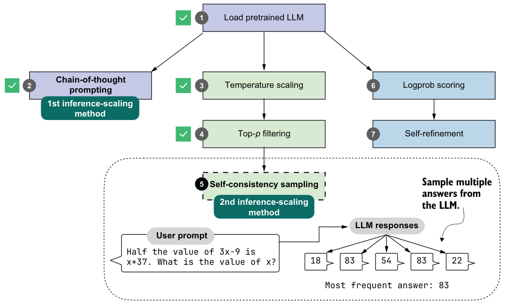
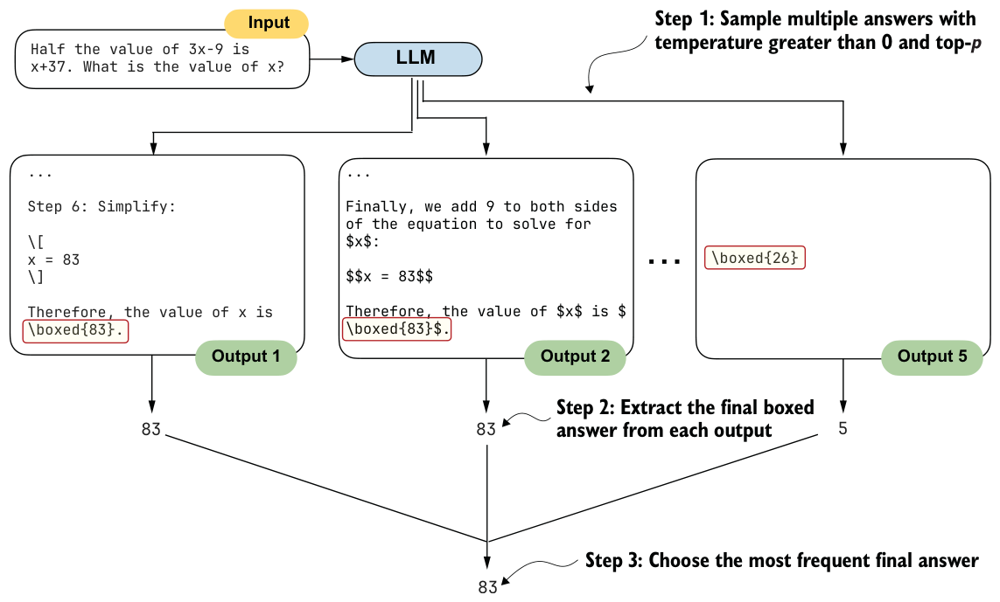

4.6Improving response accuracy with self-consistency
Now that we’ve coded the temperature scaling and top-p filtering, we are ready to implement our second inference-time-scaling technique in this chapter: self-consistency sampling.
The idea behind self-consistency sampling was introduced in the Google Research paper “Self-Consistency Improves Chain-of-Thought Reasoning in Language Models”
(https://arxiv.org/abs/2203.1117). Despite the fancy name, self-consistency sampling is essentially a form of majority voting: we use temperature scaling and top-p filtering to generate multiple answers, and then we select the most frequent one, as shown in figure 4.17.

The self-consistency sampling technique shown in figure 4.17 counts as an inference-time-scaling technique because we don’t update the model itself, and we expend more compute resources to improve response accuracy.
To build our voting-based inference-time pipeline, we’ll reuse the generation code from chapter 2, the answer extraction logic from chapter 3, and the sampling controls from this chapter. Thanks to the generate_text_stream_concat_flex function, the self-consistency code implementation is relatively straightforward. The main procedure can be summarized in three steps, as illustrated in figure 4.18.
To implement the three steps illustrated in figure 4.18, we simply call generate_text_stream_concat_flex repeatedly to generate multiple answers and reuse the extract_final_candidate function from chapter 3. The only new code is to implement the majority voting based on answer frequency.

from reasoning_from_scratch.ch03 import extract_final_candidate
from collections import Counter
def self_consistency_vote(
model, tokenizer, prompt, device,
num_samples=10, temperature=0.8, top_p=0.9, max_new_tokens=2048,
show_progress=True, show_long_answer=False, seed=None,
):
full_answers, short_answers = [], []
for i in range(num_samples):
if seed is not None:
torch.manual_seed(seed + i + 1)
answer = generate_text_stream_concat_flex(
model=model, tokenizer=tokenizer, prompt=prompt, device=device,
max_new_tokens=max_new_tokens, verbose=show_long_answer,
generate_func=generate_text_top_p_stream_cache,
temperature=temperature, top_p=top_p,
) short = extract_final_candidate(
answer, fallback="number_then_full"
)
full_answers.append(answer)
short_answers.append(short)
if show_progress:
print(f"[Sample {i+1}/{num_samples}] → {short!r}")
counts = Counter(short_answers)
groups = {s: [] for s in counts}
for idx, s in enumerate(short_answers):
groups[s].append(idx)
mc = counts.most_common()
if not mc:
majority_winners, final_answer = [], None
else:
top_freq = mc[0][1]
majority_winners = [s for s, f in mc if f == top_freq]
final_answer = mc[0][0] if len(majority_winners) == 1 else None
return {
"full_answers": full_answers,
"short_answers": short_answers,
"counts": dict(counts),
"groups": groups,
"majority_winners": majority_winners,
"final_answer": final_answer,
}In short, the self-consistency method in listing 4.17 does the following:
1 Samples multiple answers with temperature greater than 0 and top-p
2 Extracts the final boxed answer from each response
3 Chooses the most frequent final answer
Note that in our implementation, we use a for loop to generate these answers sequentially. In practice, it’s also common to generate the answers on different devices so the sampling can be parallelized.
Furthermore, in the preceding code, we set the random seed for each round individually:
if seed is not None:
torch.manual_seed(seed + i + 1)Technically, this is not necessary; setting the random seed once should be sufficient to generate diverse samples. This explicit seeding is useful if we want to rerun some of the rounds individually.
Let’s try this function and see what we get:
results = self_consistency_vote(
model,
tokenizer,
prompt,
device=device,
num_samples=5,
temperature=0.8,
top_p=0.9,
max_new_tokens=2048,
seed=123,
show_progress=True,
)The printed results are as follows:
[Sample 1/5] → '83'
[Sample 2/5] → '22'
[Sample 3/5] → '54'
[Sample 4/5] → '83'
[Sample 5/5] → '61'Since 83 is the most frequent answer, the final answer is 83 (we can access this number programmatically via results["final_answer"]). If you want to read the explanation and full answer, you can access one of the correct solutions returning 83; for example,
print(results["full_answers"][0]) prints the following:
To find the value of x, let's solve the equation step by step.
1. **Given Equation:**
\[
\frac{1}{2} \times (3x - 9) = x + 37
\]
# ...
**Final Answer:**
\[
\boxed{83}
\]With this self-consistency approach, we were finally able to generate the correct answer. (Note that the results may vary when running the code on an "mps" or "cuda" device.)
The self_consistency_vote function does not currently handle ties, so if multiple samples have the same frequency, it returns None as the final answer. In the next chapter, we’ll implement a scoring method to calculate the confidence of a given answer, which can be used as a tiebreaker.
Exercise 4.3: Using self-consistency sampling on MATH-500
evaluate_math500_stream function from listing 3.15 to evaluate whether self-consistency sampling improves the MATH-500 accuracy of the base model. Use a sample size of 3 and set both temperature and top-p to 0.9.self_consistency_vote itself to implement this tiebreaking rule; you can work with the results dictionary returned by the function instead.